発表者団体
北海道
東北
北関東信越
東京
千葉
神奈川
中部
関西
中国
九州
↞発表者団体

東北支部大学生年代表現活動
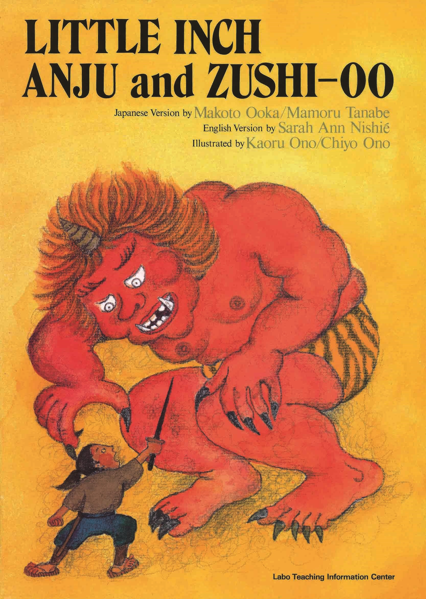
あらすじ
無実の罪を着せられ、左遷された父を訪ねる旅に出た安寿と厨子王。その道中、人さらいに騙され、愛する母とも引き裂かれてしまう。
彼らを待ち受けていたのは、山椒大夫という長者の屋敷。長者の豪勢な暮らしとは裏腹に、二人は過酷な労働を課され、困窮した生活を強いられる。
この苦境から愛する弟の厨子王だけでも救うべく、姉の安寿は悲壮な覚悟を決断する...
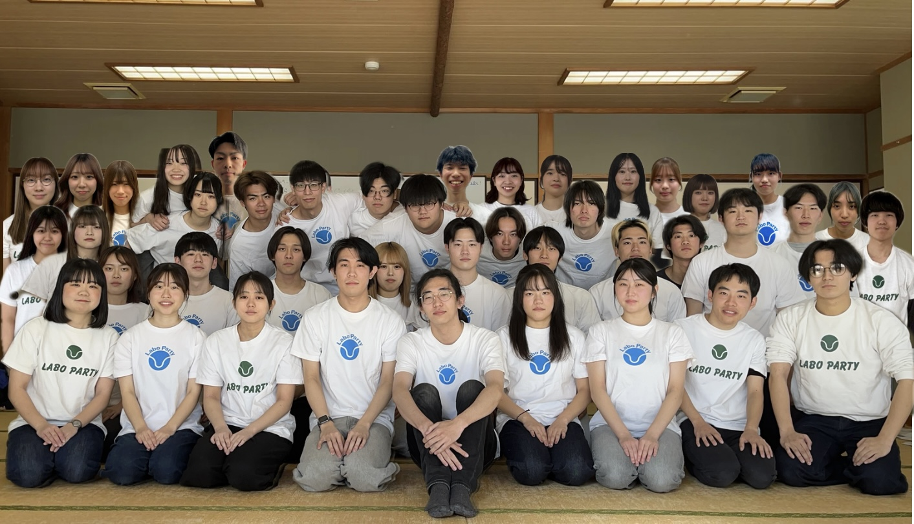
北関東信越支部大学生年代表現活動
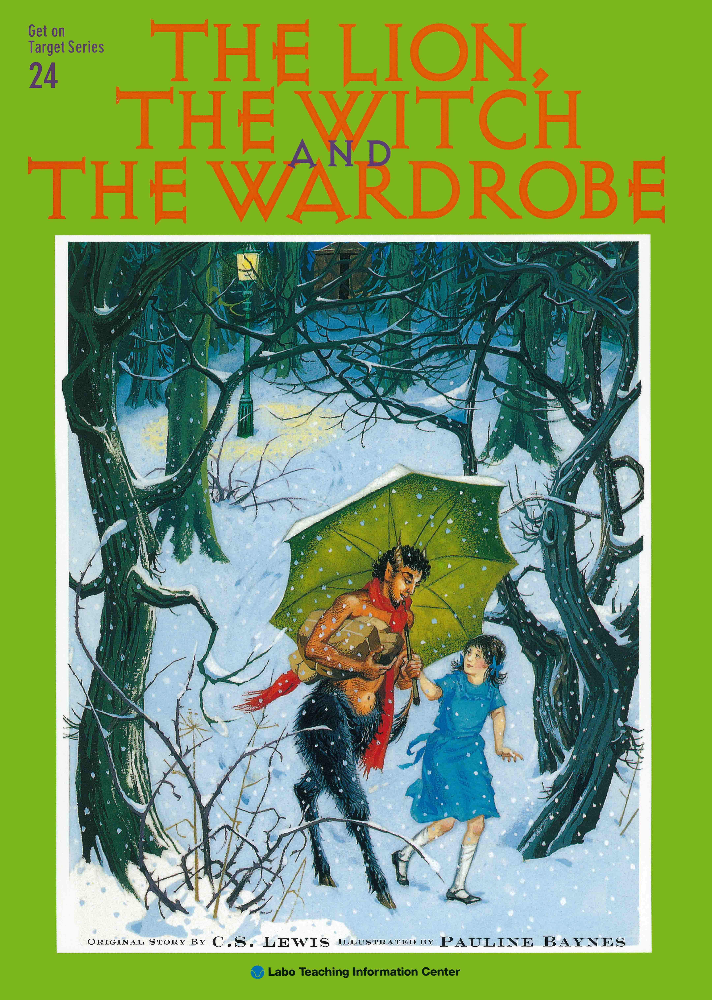
あらすじ
ピーター、スーザン、エドマンド、ルーシィの4人の兄妹は、大きなたんすを通じて魔法の国ナルニア国へ迷い込む。そこは白い魔女によって永遠の冬に閉ざされ、住む者たちを恐怖で支配していた。兄妹は魔女の支配からナルニアを助けるためライオンの王アスランに会いに行くが、エドマンドは魔女の甘言に惑わされ兄妹を裏切ってしまう。アスランはエドマンドを救うため、魔女との間に「古い掟」に基づく交渉を行います。魔女は裏切り者の命を要求しますが、アスランは彼の代わりに自らを差し出すことを選びます。夜の石の祭壇へと連れて行かれるアスランは、魔女の軍勢に囲まれ、静かにその運命を受け入れようとします。ナルニアの運命はいかに...
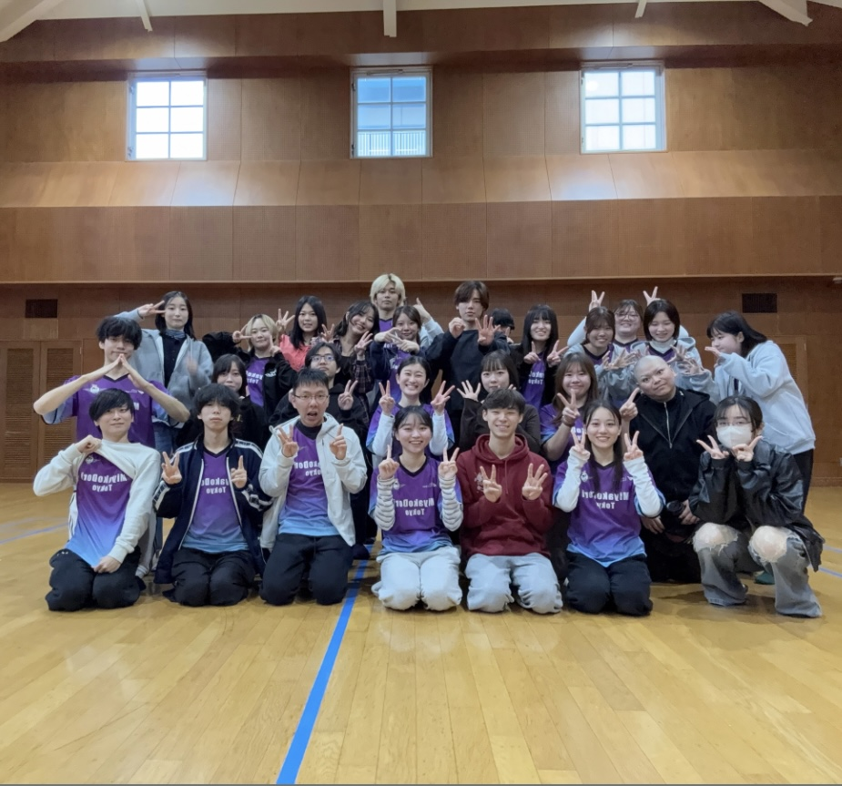
東京支部大学生年代表現活動
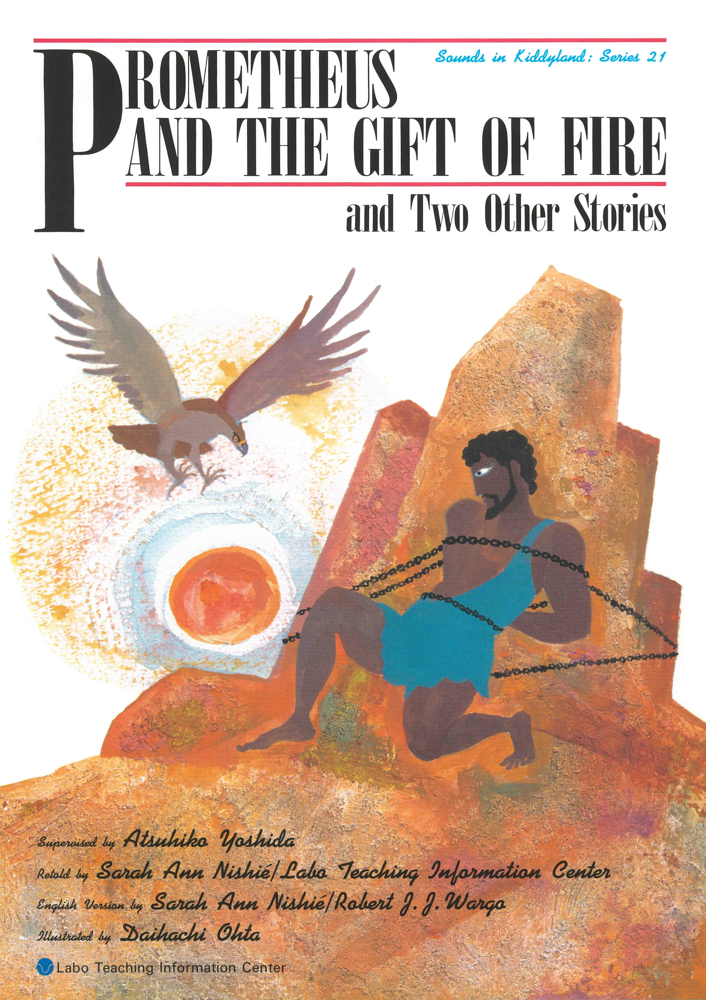
あらすじ
彼は選んだ。
まだ誰も知らない人間の未来を
ただひとりだけ見ていた。
その代償がどれほど苦悶で
どれほど孤独でも。
そして彼は叫ぶ。

千葉支部表現活動の会
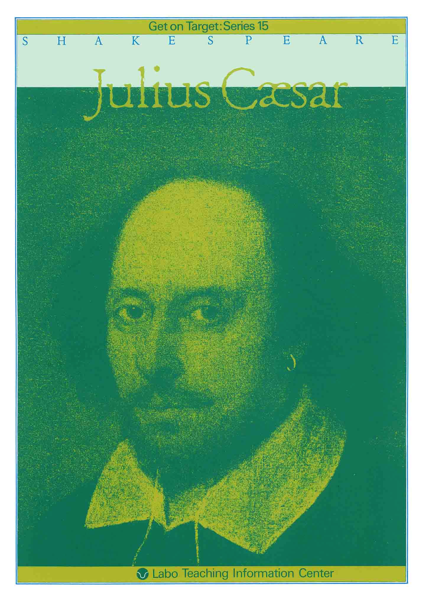
あらすじ
「お前もか！、ブルータス」
市民の熱狂的な支持を集め、終身独裁官として権力を握ったジュリアス・シーザー。
シーザー暗殺の中心に引き込まれたのは、「ローマで最も高潔な男」と謳われるブルータス。彼は個人的な友情よりも、愛するローマの自由と共和制を守ることを選び、最愛の友を刺す苦渋の決断を下す…
シェイクスピアが描いた、友情、愛国心、野心が激しく衝突する、ローマの運命を決する一日の物語。
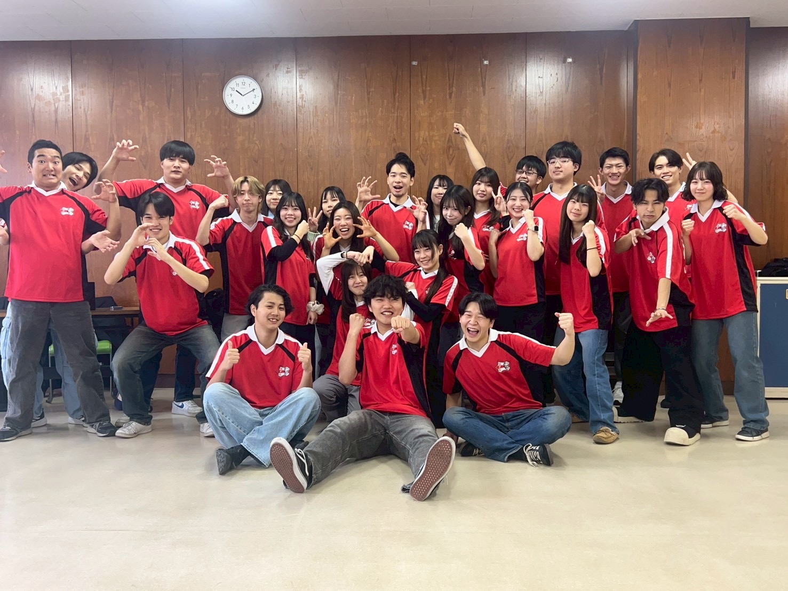
神奈川支部表現活動
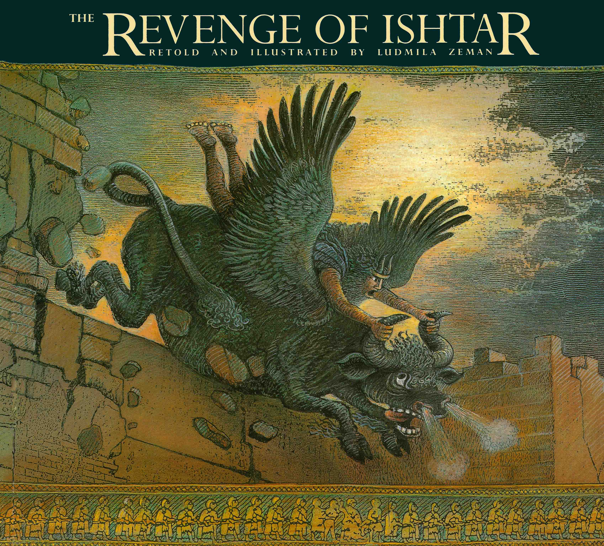
あらすじ
ギルガメシュは傲慢な王であったが、エンキドゥという友を持ちやすらかな都を築いた。しかし、その日々は続かず、ギルガメシュは地上の怪物フンババ、天上の怪獣天の雄牛そして女神のイシュタールと対峙することになる。ギルガメッシュとエンキドゥの運命はいかに！！そして、全てが終わった後ギルガメシュは何を思い、どこへ向かうのか……。
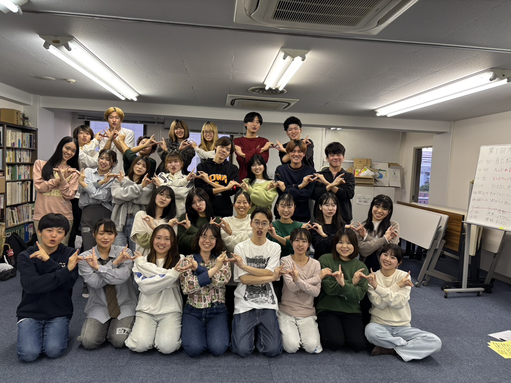
中部支部大学生ひろば
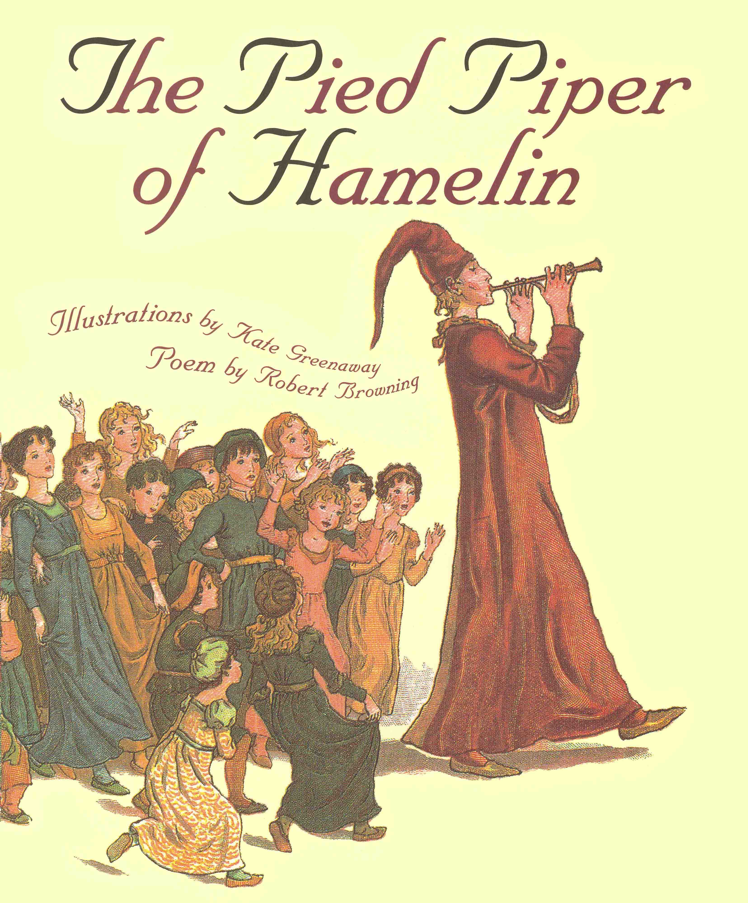
あらすじ
“And so long after what happened here
“On the Twenty-second of July,
“Thirteen hundred and seventy-six:”
”1376年7月22日
ここでかくかく しかじかありき”
（『The Pied Piper of Hamelin ハメルンの笛ふき』より）

29期関西テーマ活動研究
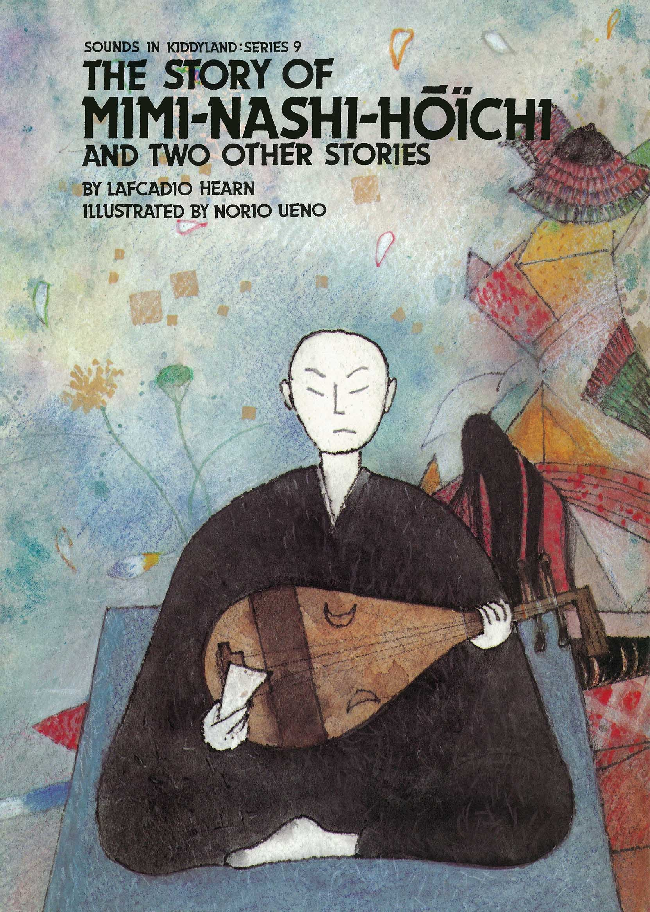
あらすじ
近江の国に俵屋藤太郎というものがあった。
ある日藤太郎は、瀬田の唐橋を渡る途中で海に住む全身真っ黒の鮫人に出くわした。龍宮から罷免された彼を哀れに思い、藤太郎は鮫人の面倒を見ることにした。
七月、三井寺の女人詣で見つけた珠名という美女に藤太郎は虜になってしまった。しかし、彼女をめとるには結納として1万個の宝石を入れた手箱が必要であり、叶わぬ恋に打ちひしがれて藤太郎は病気になってしまう。
もう長くないことを告げられた鮫人は悲しみのあまり涙を流してしまうが、、
中国支部大学生年代表現活動
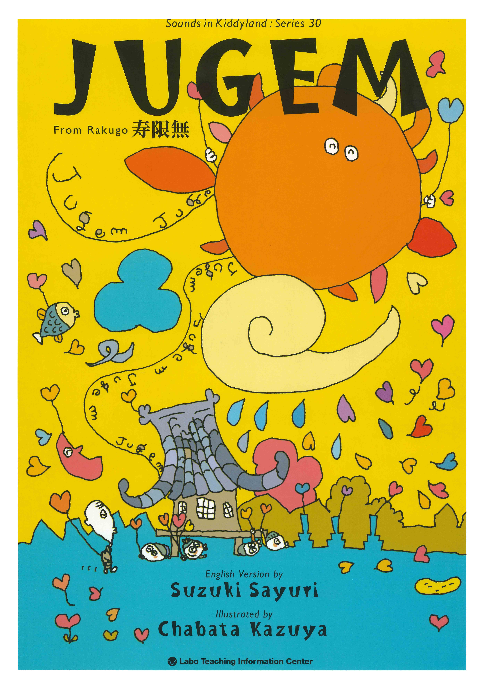
あらすじ
落語に出て参ります人物なんてのは大概決まっておりますナ。はっつぁんにくまさん、横丁のご隠居さんなんて具合でね。こういったところに、我々同様ぼーッとした連中がやってくるってェと、お話の始まりでございまして...
初めて子どもの親になった男。寺の和尚さんに名付けを頼みます。大事な子どもになんとか長生きしてもらいたいと願うあまり、和尚さんがオススメするありがたい言葉を次々つけてしまい、とんでもなく長い名前になってしまいました。その名前のせいで巻き起こる騒動とは...！

九州支部表現活動
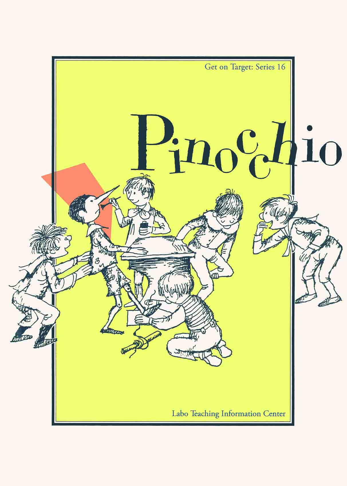
あらすじ
むかしむかし、ひとつの木切れがあったのです。
その木切れから作られた操り人形―― その名もピノッキオ。
自由気ままな性格のピノッキオは、ジェッペットの言うことを聞かなかったり、家を飛び出してしまったり……
それでもさまざまな経験を通して、ピノッキオは少しずつ成長していきます。
さて、一体どんな成長を見せてくれるのでしょうか。
↞